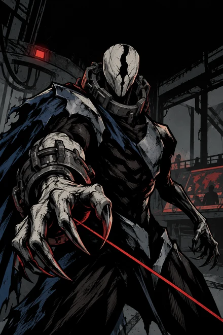
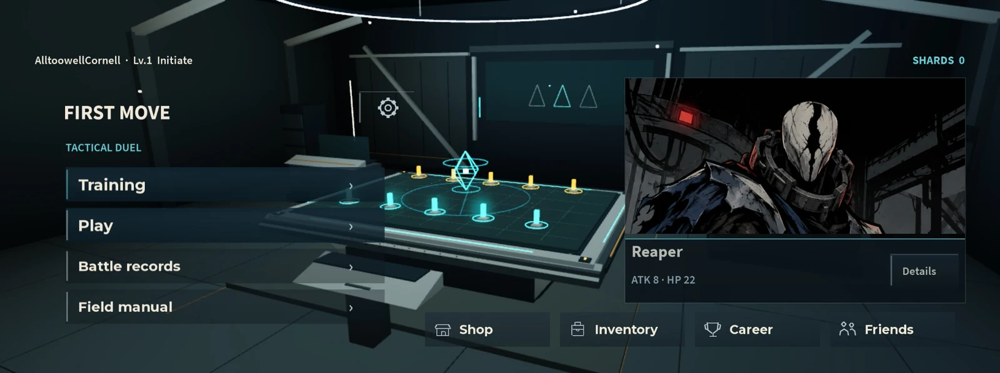
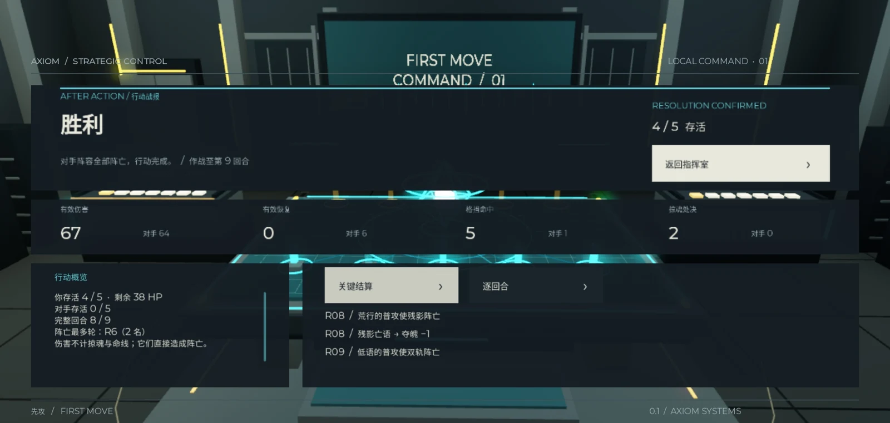

斩杀
夺魄
攻击 8 生命 22
技能「掠魂」让这次普攻命中时直接击杀目标。如果被格挡则无法击杀，技能冷却 5 回合。
使用建议
可以用来击杀生命值较高的敌人。但对方也可能猜到你的目标，选择格挡来保护它。
双人回合制策略游戏
选五名角色，
击败对方的阵容。
双方各自组建一支队伍，每回合先争夺先手，再轮流进攻。进攻时选择目标和技能，防守时判断对手会攻击谁，并选择一名角色格挡。
电脑端 · 需要 Roblox 账号与客户端 · 当前为好友试玩

01 / 基本玩法
选好阵容后，双方每回合都能进攻一次。角色的生命值和技能冷却公开，攻击目标在结算前隐藏。让对方所有角色阵亡，即可获胜。

双方交替选人，各选五名，已经被选走的角色不能再选。每名角色都有自己的技能，可以根据想用的打法搭配队伍。
游戏首页
能核克制关系
能核决定谁先行动，规则类似石头剪刀布。箭头表示克制，选中克制对方的能核就能先攻；双方选得相同则重选。先攻方行动后，再由另一方进攻。
02 / 角色介绍
有的角色能同时攻击两名敌人，有的擅长治疗，还有的可以直接斩杀目标。下面是三名角色的技能和用法。

斩杀
攻击 8 生命 22
技能「掠魂」让这次普攻命中时直接击杀目标。如果被格挡则无法击杀，技能冷却 5 回合。
可以用来击杀生命值较高的敌人。但对方也可能猜到你的目标，选择格挡来保护它。

双目标攻击
攻击 7 生命 22
技能「裂轨射击」同时攻击两名不同的敌人，对方只能选择其中一人格挡。冷却 2 回合；敌方只剩一人时无法使用。
对方只能保护一人，可以趁机攻击另一个目标。注意敌人数量，尽量在对方只剩一人之前用出技能。

团队治疗
攻击 4 生命 23
技能「修复脉冲」为所有己方存活角色回复 3 点生命，不超过生命上限。冷却 3 回合，无法复活阵亡角色。
多名队友受伤时，治疗效果更好。不过也不要等得太久，已经阵亡的队友无法被治疗。
角色插画使用 AI 辅助制作。完整十二名角色可在游戏内查看。
03 / 游戏界面
在首页查看角色技能和玩法说明，进入对局后通过角色卡、生命条和日志了解当前情况。
开始前可以查看每名角色的攻击、生命和技能，了解技能的效果及冷却回合数，再决定如何搭配阵容。
攻击结算后，界面会显示伤害、生命变化和角色阵亡。对局日志也会记录发生了什么。

对局结束后，可以查看伤害、治疗、格挡和处决记录，也能按回合回看双方的关键行动。
可以先通过新手引导熟悉操作，再与 AI 对战练习选人、进攻和格挡。
当前开放电脑端好友试玩，支持 AI 对局和同服双人对战。正式服双账号完整对局及存档重进仍在测试中。
玩法、数值和界面由陈华制作，代码与角色插画使用 AI 辅助完成。
开始游戏
需要 Roblox 账号与客户端。进入游戏后，可以先完成新手引导。
当前为好友试玩，需要试玩权限。